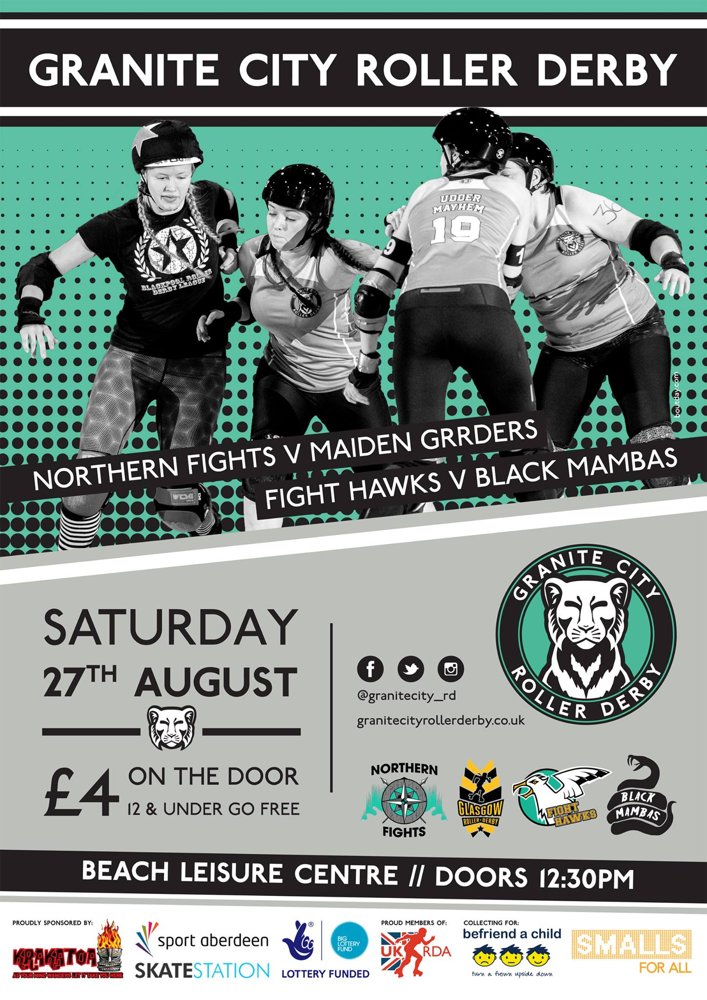

UK's first Coaching Summit: Derby Stance
Back when we interviewed UKRDA Internal Chair, Tess Robinson, one of the ongoing projects she mentioned was to support Coaching, via certifications and other events. Well, in combination with Coaching outfit Rule 56, and the Female Coaching Network, part of this is coming to pass: in November 19th and 20th, the UK's first "Coaching Summit" will be held, in Leeds.
"Derby Stance" will be a two day event, with sessions available to see on the website, and including aspects across the community, including Junior Derby Coaching.
A host of guest speakers and presenters will be there, of who more in a bit, but this is also seen as being an opportunity for Roller Derby Coaches across the UK to get together to influence the future of coaching, the certification process and any other developments.
To support this, Rule 56 have managed to get coaches from some of the top teams in the UK: Auld Reekie's own Stef Skinner, London Rollergirls/Team England and Double Threat Skates' Kirsten "Kitty Decapitate" Lee, ex Team England/current Wizards of Aus/Southern Discomfort Ballistic Whistle (who we interviewed not long ago) and many more. But, more than this, they've also managed to get Texas Rollergirls' own Smarty Pants (Nadia Kean) to come across to provide her own sessions.
Smarty is a very experienced coach, both in Roller Derby and other sports; she runs Get Smarty Coaching to provide coaching services across the USA and worldwide, as well as skating for Texas. She's also working on a book on coaching!
We were lucky enough to get the chance to talk to her about her experience in coaching, roller derby and a lot of other topics. You can hear the interview, in a first for us at the blog, here (forgive the initial uming from yours truly, this is a new thing for us):
[soundcloud url="https://api.soundcloud.com/tracks/285835975" params="auto_play=false&hide_related=false&show_comments=true&show_user=true&show_reposts=false&visual=true" width="100%" height="450" iframe="true" /]
Once you're inspired by that, get booking your tickets for Derby Stance, if you haven't already!
The Road to TBC: Lessons from ERDT and the last World Cup!
While Blood & Thunder still have yet to formally announce the location and date for the 2017 Women's Roller Derby World Cup, by the end of November we will have already seen two of the "lead up" events for next year's tournament.
The first is the the already complete European Roller Derby Tournament, held in Mons, Belgium. The second will be Team Wales Roller Derby's "The Road To TBC", scheduled for the 26 and 27th November 2016.
Between the two tournaments, we will get a good look at most of Europe's competitors in the Third World Cup, albeit at an early stage.
Attending the European Roller Derby Tournament were France, Belgium, Wales, Spain, Denmark, Switzerland, Portugal, Italy and new team Iceland.
The Road To TBC will bring you France, Wales, Belgium and Spain again, with the addition of Scotland, Sweden, West Indies and Ireland all showing their national team debuts at the event!
But what can we predict, if anything, about The Road to TBC from what has come before?
Firstly, we can look at ERDT. Whilst only 50% of the lineup overlaps between ERDT and TRtT, we can judge some expectations about absolute strength.
Here's the now-traditional Bayesian inferred strength charts from ERDT, with the top four teams also singled out in separate highlights [as usual, these charts are relative to the winner - in this case, France - and so they are not directly represented]. We've marked vertical lines to show the performance (also relative to France) in the Blood & Thunder Women's World Cup 2014, for those teams who attended.
[gallery ids="8997,9001,8998,8999,9000" type="slideshow" link="file"]
As is pretty clear, whilst Spain is just about separate from the top three, although closely competitive with Wales and Belgium; the distributions for Belgium and Wales are almost indistinguishable. While France was indisputably the strongest team at ERDT, it's reasonable to suggest that the tournament also showed that Belgium and Wales are almost identical in strength. (Wales was the victim of one of the classic problems with single elimination tournaments, being relegated to the consolation brackets by an early encounter with the eventual Champions, and achieved Third as their highest possible relegation place.) It's also possible to see that, assuming France is still relatively similar in strength, that Wales, Spain and Portugal have all noticeably improved in strength from 2014.
Over the page, we'll talk about the teams at The Road to TBC in more detail...
So, we can expect the hosts to be strong competitors in November... but what about their challengers?

Looking back at the last World Cup, Sweden was one of the strongest teams in the tournament, reflecting the strength of Scandinavian Roller Derby even back then. Since then, Swedish roller derby has gone from strength to strength, with both Stockholm Roller Derby and Crime City Rollers in WFTDA Division 1 Playoffs this year! A quick count of their recently published training team for 2016/17 [HERE] suggests that at least 13 of the skaters from 2014 are returning as possible rosters (as several skaters were recorded under their legal names for the 2014 roster, and under their skatenames here, it's a little tricky to be 100% certain). We expect, on the balance of this, and the general health of Swedish derby, for Sweden to be a contender for the top spot at The Road to TBC.
 Team France logo
Team France logo
Team France were a top 8 team for us in 2014 (although they narrowly missed the actual final 8 at the tournament itself. We see at least 12 skaters from 2014 in the 2016 roster so far, which is about an average rate of returns in Europe. Almost 50% of the roster is drawn from Paris and Toulouse (with the rest mostly from the other strong French leagues), and both teams have experienced strong growth since 2014. Paris Rollergirls, in particular, have rocketed up the WFTDA rankings in the last two years, currently at #77 in the World. We would consider France to be one of our three contenders for 2nd place, with chance at taking on Sweden for the top spot too.
Belgium and Wales, as we mentioned above, statistically drew at ERDT. At the 2014 World Cup, Belgium was the stronger team, by some distance, so this represents a particular improvement on Wales's part.

In fact, the composition of 2016 Team Wales is quite different to that in 2014, with only a handful of skaters shared betwen the two rosters. What is still true, however, is the dominance of Tiger Bay Brawlers and Swansea City Roller Derby in the training team, making up 18 of the 30 spots. Both teams have have exceptional years, with Swansea City particularly excelling at British Champs (where they defeated all comers in promotion to Tier 2).
 Team Belgium logo: Anouk Paepen
Team Belgium logo: Anouk Paepen
Belgium, meanwhile have at least 14 skaters returning from the strong 2014 roster in 2016. Belgian Roller Derby has always been pretty strong, on the basis of Gent Go-Go Rollergirls and One Love Roller Dolls amongst their many teams. However, we've not seen, perhaps, the explosive performance increase that, for example, Scandinavia has. We'd say that Team Belgium is, indeed, about as strong as it was in 2014. We expect Wales to be keen on taking on Belgium on their home turf, and cautiously predict a win for the hosts on this basis. Overall rankings are hard to predict, but there are some particularly strong teams competing in The Road to TBC, and we wonder if the battle here will be for 4th place?

Since 2014, Spain have clearly come on in leaps and bounds. The 2014 Team Spain consisted almost entirely of skaters from Barcelona and Tenerife, along with a few from outside Spain. The 2016 Training Team contains 13 skaters from 2014, but a huge number of new faces. We expect that Barcelona and Tenerife will still be strongly represented, however, and note that both leagues have significantly improved their rankings in the last 2 years (Tenerife has a steadily increasing ranking on Flat Track Stats, with no drops at all over that period!). We'd say that Spain have a good chance of placing well, assuming no surprises - although the general strength of teams at The Road to TBC is also higher than ERDT, so another 4th place is unlikely.

Team West Indies was new to the Roller Derby scene in 2014, and also had the aim of trying to promote the sport back in the West Indies itself, with all of the skaters being from leagues outside of the islands (and many from the UK). Two years later, it seems that they're planning even greater things - but there's no official roster published for the team to date. We gather that Birmingham Blitz Dames and London Rockin' Rollers are still the core of the UK branch of the team, however, and both teams have had strong years - the Blitz Dames in particular benefitting from a change of coaching style which has improved their performance. While we rated West Indies as a little weaker than Spain and Wales in 2014, we wouldn't rule out surprising things from the team after 2 more years to build.
 Team France logo
Team France logo
Team Ireland Roller Derby did pretty well at the 2014 World Cup - in fact, on some metrics, we considered them competitive with France! The 2016 iteration is totally unknown, however - they're literally recruiting and selecting as we write this. On the basis of the performance of Dublin Roller Derby (who recently had a US trip and came back even stronger), we wouldn't rule the new Team Ireland out of a top 3 spot in this tournament.

Finally, we come to our local team: Team Scotland! Scotland performed very creditably in the 2014 World Cup, placing around 10/11th place by our calculations. In 2014, the Scotland team was strongly dominated by Glasgow Roller Derby and Auld Reekie Roller Girls, with only a few skaters from Granite City, 1 from Dundee, and 1 each from Seaside Sirens and London Rollergirls. This time around, due to both changes at Glasgow, and the strong growth in strength at Dundee and Granite City, we have a more rounded mix of representation in the training team (5 skaters from Dundee, and one from Fierce Valley!); as well as more skaters from outside Scotland itself, with 2 from Wirral, 2 from Newcastle and 1 each from Hallam, Leicester, London Rockin' Rollers! We're not sure how the team roster for Team Scotland has been selected for The Road to TBC, but we've seen the team in practice, and they look pretty cohesive already. We'd tip Scotland for a chance at upsetting Ireland's dreams of a Top 3 spot, if anyone does.
Of course, the only way to actually see if we're right is to make your way to Cardiff for The Road to TBC itself. Ticket sales are open for the 26th and 27th November, and sales are going fast, we believe!
Roller derby comes back to Dundee!
Team Crazy Legs formed in September 2013, to open possibilities to any member of the roller derby community; be they skater, ref, announcer, NSO or fan; affected by chronic illnesses or mental health issues. They strive to create positive vibes and discussion points to challenge the stigma of mental health, inside and outside of derby.
Vagine Regime UK launched in 2012 and forms a fully inclusive travel team of LGBTQ derby individuals! Spawning from the original Vagine Regime of the USA (formed in 2008), this community is a tag team of queer skaters from leagues all across the UK promoting queer visibility within out sport.
For the first time ever, we see these two almighty clans band together to take on Dundee Roller Girls' A team, The Silvery Tayzers. For an epic showcase of talented skaters and an unmissable derby game, come along to the D.I.S.C. in Dundee. Doors open at 12:30 with first whistle at 13:00. Tickets on the door £6. If you want to know more check out the event page here: DRG A v Team Crazy Vagine
Ranking of Roller Derby Internationally
On our co-editor's personal blog, we have a few updates on the topic of Roller Derby sport ranking.
In particular, the blog will be adopting a new prototype ranking system for international roller derby, the theory and comparison paper for which is here:
https://aoanla.wordpress.com/2016/09/27/ranking-mechanisms-from-sport-and-roller-derby
We are also starting on a series of articles covering an investigation into a more "simulation" based rating system for Roller Derby here:
https://aoanla.wordpress.com/2016/09/13/roller-derby-and-simulation-pt1/
BCR Central Belters vs Furness Firecrackers
Elusive Sunday Afternoon Derby is back this weekend (18th of September) as Bairn City's Central Belters take on Furness Firecrackers at Grangemouth Sports Complex.
This is the second time these teams have faced each other on track. The first encounter dating way back to July 2013, when it was Furness who skated to victory taking the win that day by a large margin.
We haven't seen much of the Belters on track this year but they have gotten two games so far under their belt for 2016. Those coming against Belfast City (home) and North Cheshire (away) and in both cases they have emerged victorious. Since May of last year, the Belters have only lost one out of the five games they have played, which has seen them climb up the European rankings to 180th where they currently stand.
With it being over three years since these teams last played each other much has changed for both in that time, but there is only one way to see out how much and if the Belters will take the win this time around.
Doors are at 14:15, tickets can be purchased online in advance here or at the door on game day. For further information visit the facebook event page.

Granite City's Sparkling Year peaks with Glasgow rematch.
Granite City Roller Derby's rebranding (from Roller Girls) at the end of last year obviously prefigured some kind of Pokémon style evolution to a new level of performance.
This year has been an exceptional one for the league to date. A-team, the Northern Fights, absolutely demolished their Division in British Champs, taking the top spot after convincing wins against fellow Tier 4 North members Spa Town, Halifax Bruising Banditas and Blackpool Roller Derby League, and earning promotion into Tier 3 North next season. They've gotten 3 skaters into the Team Scotland 2016 Training Team. And their B-Team, the Fight Hawks, have embarked on a second successful year of bouts, working their way up the rankings.
Now Granite City are trying to top things off with a double header at home on 27 August, placing the Northern Fights against Glasgow Roller Derby's tough B-team, the Maiden Grrders; whilst the Fight Hawks take on a mixed team of great skaters from Doonhame Roller Derby, Ayrshire Roller Derby and Mean City Roller Derby.
We caught up with GCRD's Krusty, the Northern Fights' Co-Captain (and Team Scotland Training team member) Udder Mayhem (Christine), and Fight Hawks' Co-Captain and Northern Fights Bench Manager Pert Hits (Sam) to see how the league feels about their year.

Obviously, 2015 was not a good year for Granite City at Champs, ending with your relegation to Tier 4 from Tier 3. This season, however, you've really stepped into gear, convincingly topping the table for promotion back up into T3! Did you make this a conscious aim for the year, and what changes did you make to help it happen?
Christine: 2015 was a challenge for us. We lost some experienced skaters, but we also gained new ones, however, we hadn’t quite gelled into the team we knew we could be.
The disappointment at the beginning of 2015 forced us to refocus our tactics and to adopt the use of specific line-ups. To facilitate this, the Fights organized extra “team time” dedicated training sessions, which was funded through the skaters own fundraising efforts (e.g. boot sales, personal fundraising etc.). We were very determined to be the awesome team we knew we could be!
We didn’t win all of our games, but we started to perform much better against higher ranked teams, and finished British Champs 2015 with a convincing win against Halifax Bruising Banditas.
For 2016, fortnightly team-focused sessions have continued as part of our structured training, and are now funded by the league for both the Fights and the Hawks. We recognised the importance of training as a team, especially as GCRD continues to grow. We’ve gelled really well this year as a result, and this is reflected in our performance in Tier 4. We hold regular team meetings to revisit our goals, and are planning for a more successful time in Tier 3 in 2017. Bring it on!
Sam: The regular team training has certainly helped the team bond and act as an effective unit. These sessions also allowed the 2016 Bench staff (myself and Krusty) to really focus on the team, feedback what was working and direct the team to further their game, the game they want to play. It has been really pleasing to see the team numbers grow, allowing them to move away from specific line-ups and into a direction where they know each other and their play and it doesn’t matter who they are lined up with.
GCRD have also had a good year in National terms, with 3 skaters (including two of your highest rated jammers in Champs) making it through to the Team Scotland Training Squad selection. I think last time you had 4, but it's also true that less GCRD skaters tried out this time. How do feel about your skaters making the training team (and the training team itself having skaters from so many leagues)?
Christine: As one of selected skaters, I am obviously delighted that I managed to make it through to the training squad, along with the brilliant Rock’N Riot and Jo Mamma. All three of us are also coaches, and we are keen to soak up as much as we can and bring it back to GCRD training sessions, so that the skills we learn can be passed on to benefit the rest of the league.
To answer the other question, I am personally thrilled to see so many talented skaters from a variety of leagues! It will keep things interesting as every league is different, and we can all learn new and awesome things from each other. We had our first session a couple of days ago, and it was a fantastic and positive experience. I asked the question “how many hours did you drive to get here?” many times that day!
Sam: Echoing Christine, we are very proud of our skaters being selected for the Team Scotland training squad. Each year we have had good representation at Team Scotland try outs and then onto Team Scotland itself. Seeing such a variety of leagues represented on the training team is so reassuring that the sport in our wee country is really progressing and skaters really advancing. Some exceptional high-level derby being played across the country!
This upcoming bout against Glasgow's Maiden Grrders is your first non-Champs bout this year. This is something of a delayed rematch - the last time Granite City faced the Maidens was in 2013, where Glasgow took a convincing win. How are you feeling about this time around?
Christine: We look forward to welcoming the Maidens to Aberdeen, and are excited for the challenge! A lot has changed since 2013 and it will be a very different experience for both teams involved. For instance, when the Fights last played the Grrders, I was more focused on passing my minimum skills! We’ve been working very hard the past few months, and this will be a good test for us as we approach Tier 3 again.
Sam: The best test for us! The team are really looking forward to this challenge, aiming for all the hard work to pay off and give the Grrders a run for their money. I think the skaters involved, from both teams, have changed so much since 2013 it will be really fun game both to be part of, but to watch too!
With the Northern Fights busy with British Champs, GCRD B have had most of the flexibility in their fixtures. You’ve taken on both Dundee B (the Bonnie Colliders) at home, and more recently, Auld Reekies ASTROs away. Are the Fights jealous of your free schedule, and what’s next for the Hawks?
Christine: I guess I am a little bit jealous, but pinning down games has been somewhat of a challenge for both the Fights and the Hawks, especially in the first half of the year. A lot of work has been done behind the scenes to try and remedy it, however, there were home game slots for both May and July that I couldn’t find a team for the Fights to play against, and July’s date was completely cancelled in the end. Now we are approaching autumn, and Champs is finishing for most teams by this point, we are finding it much easier. We have one more home game against Sheffield Steel Roller Girls in October, and are playing ARRG’s All Star Reserves in November, which should keep the Fights busy! It should also challenge us, and help us to prepare for Tier 3 next year.
Sam: If they are they’ve certainly not voiced it… but I guess travelling (half) the length of Britain once a month for 3 or 4 months keeps you busy and focused. They are certainly excited about the few home games we have planned for the later half of the year.
The Hawks have a few games in the pipeline, a couple more double header home games and an away game too. As a team, we are still evolving and finding our game but as time is moving on we are gelling better as team too. As Co-Captain, I’m excited for the skaters to get more games under the belt and get the opportunities to play and show-case their hard work. I am also really looking forward to training with our freshly minimum passed skaters and helping build them up to game time! Some very exciting skaters are on the up through not only our minimum course, but our Intermediate training group too.
This is the first time for the Fight Hawks taking on a mixed team of skaters from across Scotland. How do you plan for that, and how are you feeling about taking on some of the rising stars from Ayrshire and Doonhame?
Sam: Our plan is probably similar to if we were preparing for any other league team; play OUR game. Training alongside the Northern Fights, and scrimming against them as teams, has really helped us focus on our weaknesses and up our skills.
We are really looking forward to taking on Ayrshire and Doonhame! As noted previously, I am always super impressed and excited by the calibre of roller derby coming out of every league and I expect these two leagues to be no exception. I hope we are a suitable warm up for Ayrshire before their first home bout on September 10th.
For me, personally, having spent the first few Hawks games as their Bench due to injury, I am so super excited! I was with the Hawks standing on the side-lines during their game with Mean City, and really look forward to playing against some of the Mean City ladies in this game too.
We believe that this bout is also raising funds for some great charities, can you tell us a bit about this?
Krusty: At every home game we host, we try to give some exposure to local charities within Aberdeen and surrounding areas. We have supported local charities at every home game and managed to raise substantial amounts of pennies on our cake stall, our home bakes are kindly donated by skaters, friends and family. We are overwhelmed by the donations we receive and the generosity of our supporters (and officials!) that purchase our fine home bakes. Sales from our cake stall on the 27th August will be donated to Befriend a Child, they are Aberdeen's only 1:1 befriending service for vulnerable children and young people.
We also decided for this game that we would like to ‘borrow’ an idea we saw Sheffield Steel Rollergirls post up, holding a bra amnesty in support for ‘Smalls for All’. It’s something my work is doing too and it’s a fantastic idea! We are looking for brand new pants and new or worn bras that still have good wear in them. It’s an easy thing to organise but it will be greatly received by Smalls for All who is a charity which helps women and children in Africa.
If anyone has any great suggestions for our next charity appeal, come speak to us at the game on Saturday!
Granite City's Double Header is at their usual venue, Aberdeen Beach Leisure Centre, August 27th. Doors open at 12:30pm, for the first whistle at 1:10pm. Tickets are just £4 on the door. The Facebook event page is here: https://www.facebook.com/events/1717081471898842/
Rematch Central on the 20th
As we mentioned last week (with a quick discussion of how to make the most of it), this weekend is chock-a-block with roller derby.

Over to the West, Glasgow Roller Derby are back with another hosted Vagine Regime game, this time seeing VR UK take on the mighty meat-free Soy Division. First up, though, you can see Science take on Magic in the B bout. As is often the case for Glasgow-based bouts, Glasgow Caledonian University's ARC is the host venue, and doors open at 12:45 . The event page is here: https://www.facebook.com/events/550878811750965/
Tickets are just £8 in advance (only £4 a bout) from the GRD website here.
As is now traditional for GRD, the action will continue into the evening, as the league hosts its fourth Queerosity afterparty, at the Garnethill Multicultural Centre, from 19:30 (and a very affordable £3 entry fee, free for refugees and asylum seekers!). https://www.facebook.com/events/280439012320842/
And for those who've been inspired by all of this and are feeling up to it the day after, GRD's next intake day is on Sunday afternoon, also at the ARC (starting at 1pm). https://www.facebook.com/events/311795079209622/
Meanwhile, across in Grangemouth, the busiest location for Roller Derby in Scotland, the Central Belt's Fierce Valley Roller Girls and Bairn City Rollers have joined forces for the first time in hosting a double-header of their own. First, Fierce Valley will be playing a Game of Thrones (in fact, defense of the Wall) themed intraleague.

The real grudge match will be the second game, as BCR's men's team the Skelpies take on Tyne And Fear B, the Inglorious BStars in a rematch from last year. With several Skelpies featuring in Power of Scotland, and Tyne and Fear (A) no stranger to various national teams, this should be an intense display of Men's Roller Derby, made more so by the fact that the BStars were the last team to beat the Skelpies in a public game.
The day in Grangemouth kicks off at 3pm. https://www.facebook.com/events/972951379480637/
For this double header, the price is a mere £5 in advance, from Brown Paper Tickets, or £7 on the door!
MRDWC: The SRD Interviews (ICYMI)
Now that the Men's Roller Derby World Cup in Calgary is over, and all the photo albums are slowly reaching completion, it's probably worth our while reminding you that we also did a few mini interviews at the event.
We've stuck them together in a playlist for you here:
Teams involved are: Netherlands, Argentina, Belgium, Japan, Mexico, Scotland and Wales. We're thankful to each of them for giving us the time to chat to them.
(The Talk Derby To Me podcast also caught up with skaters from Ireland, Canada and Japan, and you can catch their interview collation on the TDTM iTunes store here: https://itunes.apple.com/gb/podcast/talk-derby-to-me/id1102554666?mt=2 (you want the MRDWC Interviews, but TDTM also caught up with several members of Power of Scotland before the Cup, and also did a postmortem in their most recent "regular" podcast, so there's hours of listening there...
If you like what you listened to, consider signing up to their Patreon here: https://www.patreon.com/tdtmpodcast)
(And, for completeness, Nottingham Roller Derby also have a podcast, much newer than the above. The Good Arrows recently posted an interview with Power of Scotland's Skate Plissken and Owl, recorded before MRDWC, which you can get here: https://itunes.apple.com/gb/podcast/good-arrows-nottingham-roller/id1132986251?mt=2 . Highlights include PoS and Granite City Brawlers' MoMo being tipped as "man to watch" in Men's Derby, and the continuation of the Zombie Cow theory of the PoS Logo.)
Ayshire Roller Derby hit the Track, Full Throttle
Someone at Ayrshire Roller Derby is clearly a fan of old Lucasarts adventure games. The league's long-awaited debut bout, hosted at Magnum Leisure Centre, Irvine, is titled simply "Day of the Tentacle", not just a reference to ARD's Kraken/Octopus mascot, but also the name of Lucasarts' famous sequel to their original hit, Maniac Mansion.
Unlike the game, we expect that ARD have few plans for world domination or toilet-based timetravel, and instead will be concentrating on the challenge of taking on Lothian Derby Dolls for their first public bout as a team. It's something that Scotland's west-most league have been working on for months, with many of their skaters immediately signing up for multiple cherry poppers (or "rookie bouts" as the more serious in roller derby seem to be calling them) as soon as they've passed mins.
And it all builds to this, the 10th September in Irvine, when they come together as a team for the first time in public.
One of the most visible skaters the aforementioned games has been Poison Petal, who's probably bent the rules on how much experience you can gain and still count as a rookie over the last 9 months. She was also happy to talk to us (and take some comments from others on the team) on this occasion:
"We have been on an awesome adventure since the team was first formed until now. There's been highs and lows and many hall changes, but we are finally just about there! Our first bout will take place on the 10th of September against Lothian Derby Dolls. Now the hard work begins all over again. We've navigated our way through mins and now we have even more skills, strategies and tactics to learn. There is a very excited buzz around the team at the moment with everyone pushing themselves in order to merit their green jersey and gain a place on that first team. I asked a few of the team about how they felt about the game coming up.
Barty Ouch, one of our newest mins passed players, said «[I'm] nervous, excited, slightly terrified; but can't wait to hopefully make the roster and get out there with my team, and show that all our hard work has paid off and what ARD is all about. It'll be a fantastic day for everyone playing or not and this is really just the beginning for us.»
Super Sal agreed, «I'm terrified, and excited all at the same time. I'm also proud of the team (and myself) for getting to this point! It's taken a while. For me anyway!»
R2 DeckYou «I'm looking forward to taking the first step with ARD into the derbyverse. This will be the first time that I can play with a full team of the girls I've laughed and cried with for the last 10 months.»"
Doors open at 11:30, for a probable start around midday. There's no online tickets available at the time of writing, so you'll have to get them on the door...Your Q3 Roller Derby Schedule ramps up!
Unlike North America, where the "Derby Season" at high levels is carefully constructed to leave almost nothing on the agenda for the start of WFTDA Playoffs around September, Europe continues to have a packed schedule into the dying days of the year.
After a brief slowing around the time of the Men's Roller Derby Championships and Rollercon, this year has been no different.
We're going to have some separate articles on some of these events, and more events will pop up on the radar which are currently a bit less confirmed, but, here's a sample of the upcoming events featuring Scottish skaters or leagues this year:
✓20 Aug - Glasgow host (VRUKvSoy Division etc); FVRG Intraleague+BCRSkelpies v Tyne and Fear (Read a little more on both, here).
✓27 Aug - BairnCityRollers' Central Belters away (North Cheshire); Granite City home(v GRD, and v mixed team featuring Doonhame and Ayrshire)(read more here); FVRG Band night
✓3 Sept - Shark Conservation (hosted in Glasgow, read more here), Dundee host Co-ed Bootcamp (cancelled)
✓10 Sept - Ayrshire v LDD! (read more here), European Roller Derby Tournament (Belgium), Newcastle/GRD (in Newcastle); Dundee at British Champs Playoffs in Newark
✓17 Sept - Stormy Sevens (Rainy City Sevens Tournament) featuring some Scottish skaters. The Great Yorkshire Showdown (hosted by Leeds Roller Dolls in Halifax), featuring Glasgow Roller Derby
✓18 Sept - Bairn City Roller's Central Belters v Furness Firecrackers (hosted in Grangemouth) Covered by us here.
✓24 Sept - Glasgow Roller Derby Home Teams
✓1 Oct - Granite City Roller Derby Double Header - Northern Fights v Mixed team, Fight Hawks v Mean City (Women).
✓8 Oct - Hyperchallenge Unicorn 7s featuring some Scottish skaters; Dundee A v Team Crazy Vagine (!); ARRG v London!; Newcastle Roller Girls Bootcamp
✓9 Oct - Fierce Valley Roller Cubs at Junior Derby in Barnsley! (part of a triple header with other bouts)
✓15 Oct - Bairn City Rollers v "Brawler Buddies" ["Open"/Coed game]
✓ 22 Oct - Fierce Valley Roller Girls Charity Co-ed Sur5al (Harry Potter theme). Team submissions open. ; Auld Reekie Roller Girls v Newcastle Roller Girls (A v A, B v B!), in Newcastle
✓29 Oct - Mean City Roller Derby's HallowMean
✓5 Nov - Dundee Roller Girls Home Teams, Auld Reekie B v Granite City A, Dublin v Glasgow
✓12 Nov - Men's European Cup 2016 hosted, as always, by Tyne and Fear in Newcastle. Glasgow Roller Derby Home Teams.
✓19 Nov 5th Blocker Skates' 5th Birthday Bash; Granite City Brawlers' debut Home Bout (versus Crash Test Brummies B), Belfast City host Auld Reekie ASTROs
✓26-27 Nov Team Wales's International hosted event (The Road to TBC), ARRGmageddon [Auld Reekie B-level tournament]
3 Dec Glasgow Roller Derby Christmas Charity Bout [poster here]
10 Dec Charity Bout in Grangemouth
21 Jan (yes, next year, but...) Glasgow Roller Derby hosts Derby 7s.
-
Wider events (featuring European teams, esp UK, or important tournaments):
✓22 Aug - "Children's Roller Derby" junior derby training /experience event offered by Power of Scotland's Whyte and MacDie.
✓26-28 Aug - WFTDA Division 2 Playoffs (Lansing), featuring Nidaros Roller Derby, Bear City Roller Derby from Europe
✓27 Aug - The Suomi Cup (#5) in Helsinki
✓2-4 Sept - WFTDA Division 1 Playoffs (Montréal) featuring London Rollergirls, Kallio Rolling Rainbow from Europe
✓3 Sept - Nottingham Roller Derby Triple Header!
✓9-11 Sept - WFTDA Division 1 Playoffs (Columbia), featuring Rainy City Roller Derby, Crime City Rollers from Europe
✓16-18 Sept - WFTDA Division 1 Playoffs (Vancouver), featuring Victorian Roller Derby League (not from Europe, but hey), and Stockholm Roller Derby from Europe
✓23-25 Sept - WFTDA Division 1 Playoffs (Madison), featuring Helsinki Roller Derby from Europe.
✓24 Sept - Rainy City v Newcastle Roller Derby (twice - AvA, BvB!); an astonishing TRIPLE header (2 international!) hosted by Dublin Roller Derby
✓15-16 Oct DagaDenter Tournament (Southern/Central Europe)
✓ 22 Oct - Sur5al 2.0 Tournament in Rotterdam. Hellfire Harlots (Nottingham) event.
✓29 Oct - "JAMdemic" themed Tournament (Central City Rollergirls, Birmingham)
✓4 Nov - WFTDA Champs (no doubt featuring some of the above from Europe!)
16 - 18 Dec - Tenerife Roller Derby hosted European Tournament, featuring Dundee Roller Girls, and Crime City Rollers.
April 2017 - European Junior Roller Derby Tournament in Copenhagen (yes, we know, next year, but it's big enough to need advance notice)
29 April 2017 - Shepsk8 memorial skate event, Perth
?? 2017 - Roller Derby World Cup 2017